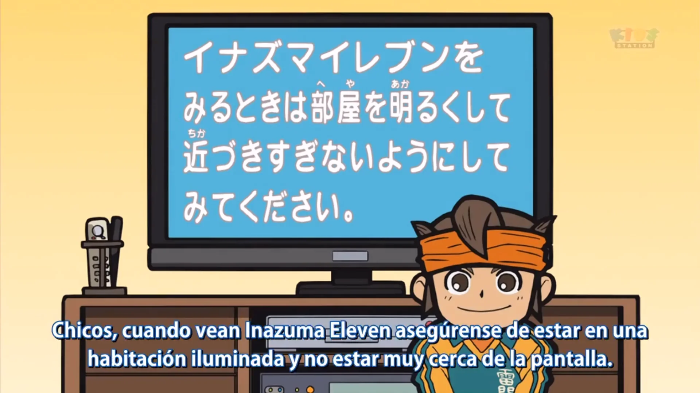

Mark Evans es el jugador de fútbol con más talento del momento, además de ser el nieto de David Evans; uno de los más fuertes porteros de Japón; que murió antes de que Mark naciese. Incluso aunque sus habilidades y su entusiasmo es increíble y tiene una gran motivación, sus compañeros de equipo no parecen sentir la misma pasión por el fútbol que él. Sorprendentemente, un día aparece en su vida un misterioso forastero llamado Axel Blaze. Se trata de un jugador de fútbol que ha llegado a la ciudad de Max para reclutar jugadores y formar un equipo de fútbol. Mark no cuenta con el apoyo de su instituto, ya que el colegio Raimon al que acude no cuenta con un equipo de fútbol. Desde ese día, Mark vivirá numerosas aventuras en el campo de fútbol, parando los goles de otros equipos para conseguir que su equipo sea el mejor equipo de fútbol de Japón.